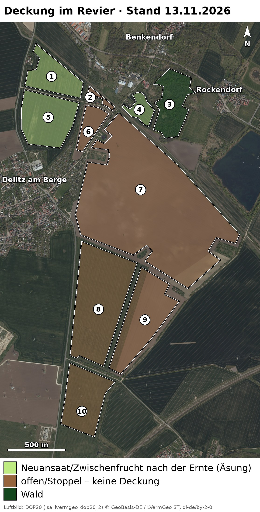
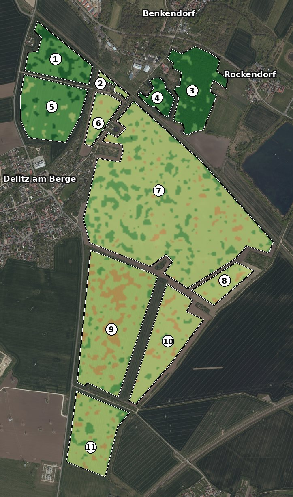
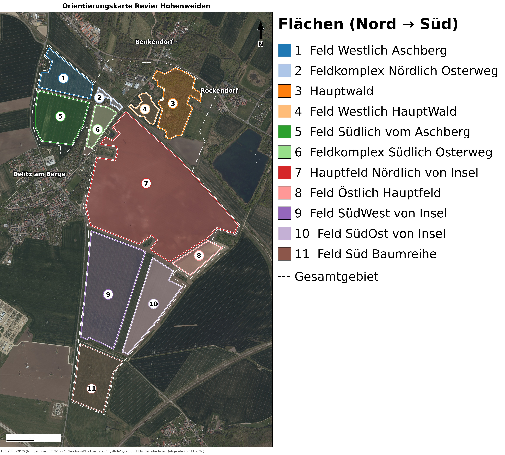
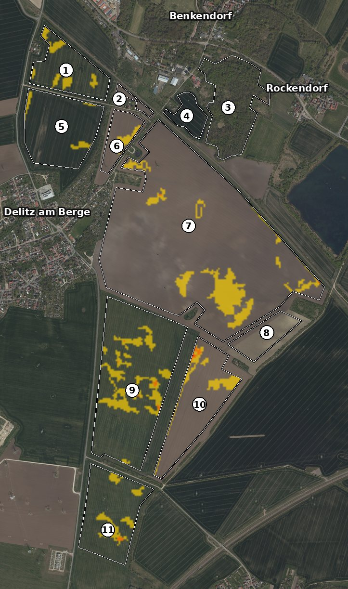
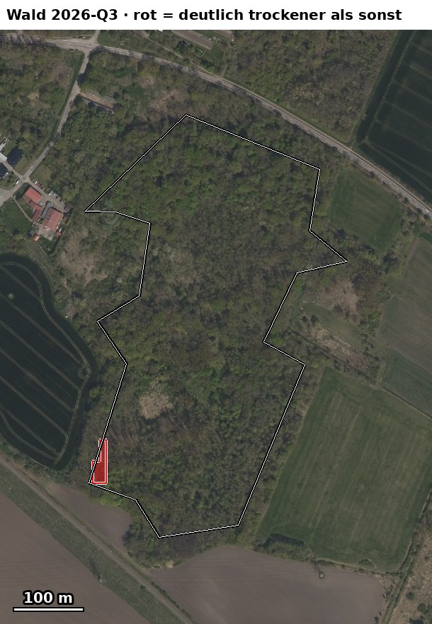

Revier Hohenweiden · Jahresverlauf
Punkte = einzelne Satellitenaufnahmen, Linie = geglätteter Verlauf (Lücken = keine wolkenfreie Aufnahme). Graues Band = Spanne vergleichbarer Jahre (), gestrichelt deren Mitte. ▲ = gemeldetes Ereignis.
Radar (Sentinel-1, etwa alle 3 Tage, auch bei Wolken): Stärke des Radar-Echos vom Feld im Vergleich zum Wald. Hoher Wert = dichter, hoher Bestand; ein plötzlicher Abfall = Bestand entfernt (Ernte). Schwankungen von 1–2 dB sind normal (Regen, Tau).
Balken = Regen je Woche in Litern pro Quadratmeter (1 l/m² = 1 mm), gestrichelt = Wochenmittel aller Jahre. Braune Linie (rechte Achse) = Wasserbilanz seit 1. März aufsummiert (Regen minus Verdunstung); je tiefer, desto trockener. Die Schaltflächen über einem Diagramm zeigen nur die gewählte Reihe; Diagramme und Karten lassen sich durch Anklicken vergrößern, ⓘ erklärt sie.
Gemeldete Ereignisse
Grünkarte · Monat für Monat
Weitere Karten





Fruchtfolge
Quartalsbericht
Datenquellen: Copernicus Sentinel-2 und Sentinel-1 (ESA, über Element 84 und Microsoft Planetary Computer), Wetter: Deutscher Wetterdienst (über Bright Sky), Luftbild: DOP20 © GeoBasis-DE / LVermGeo ST, dl-de/by-2-0. Kultur und Ereignisse sind automatisch aus Satellitendaten geschätzt.